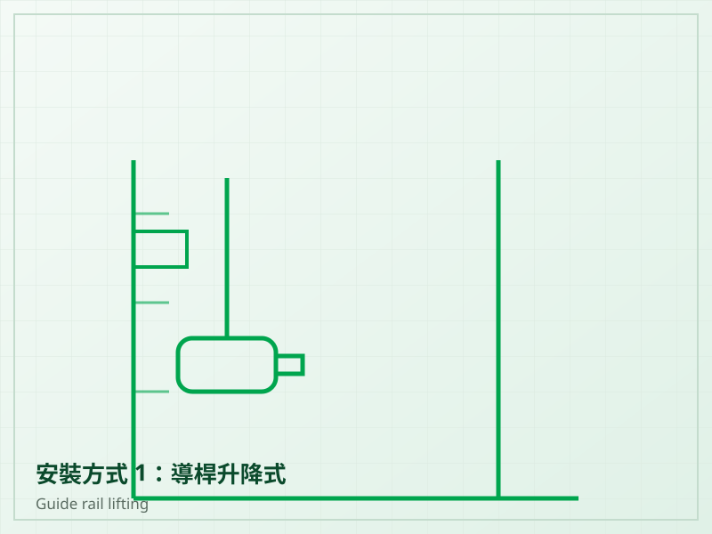
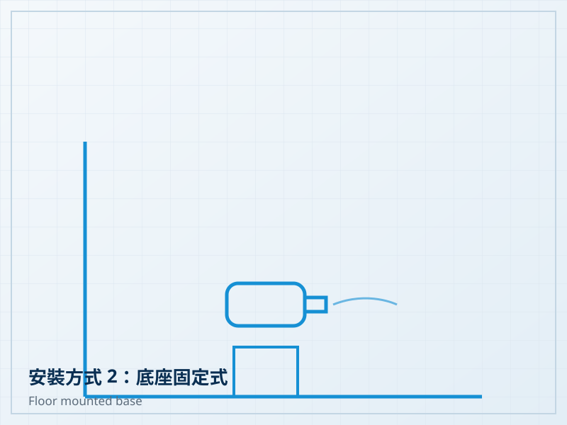
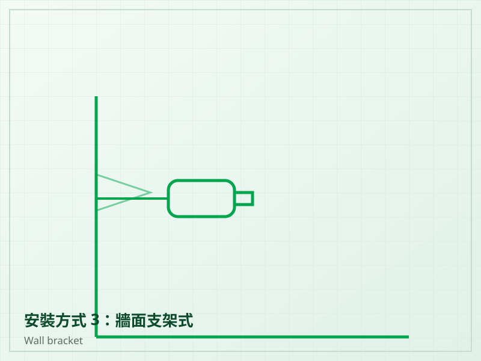
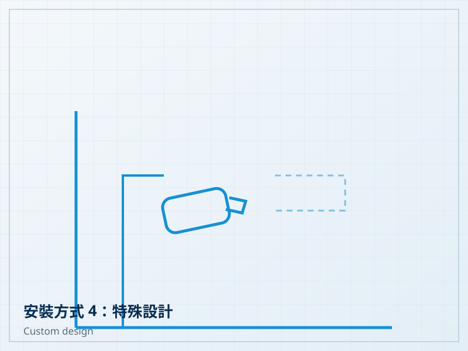

安裝方式 1：導桿升降式
沿導桿升降定位，不需放空池水即可吊出維修，適用深槽與需定期保養的場合。

沉水攪拌機適用於污水處理系統中的水體攪拌、污泥攪拌、防止沉澱、污水均質與水流循環，是生物處理槽、調節池與污泥儲槽常見的設備。
產品具有不同馬力、轉速、葉輪直徑與安裝方式，可依使用環境與槽體條件選配；特殊現場條件亦可依需求設計安裝方式。
PJ 與 PJM 系列提供不同功率、極數、葉輪直徑與轉速組合，可依槽體尺寸與攪拌需求選型。
持續的水流循環可避免懸浮固體沉澱堆積，維持槽內濃度均勻。
整機沉入水中運轉，不需另設機房空間，運轉噪音低。
提供多種安裝方式，可依池型、水深與維修條件選擇，並可依使用者需求進行特殊設計。
| 型號 | 功率 (kW) | 極數 | 葉輪直徑 (mm) | 轉速 (rpm) | 推力 (N) | 重量 (kg) |
|---|---|---|---|---|---|---|
| PJ0.37/6-220-980 | 0.37 | 6P | 220 | 980 | — | — |
| PJ0.55/4-220-1450 | 0.55 | 4P | 220 | 1450 | — | — |
| PJ0.85/8-260-740 | 0.85 | 8P | 260 | 740 | — | — |
| PJ1.5/6-260-980 | 1.5 | 6P | 260 | 980 | — | — |
| PJ2.2/8-400-740 | 2.2 | 8P | 400 | 740 | — | — |
| PJ4/6-320-980 | 4.0 | 6P | 320 | 980 | — | — |
規格表可左右滑動檢視完整欄位。
以上規格依原廠型錄為準，實際數據請洽詢本公司。
可依池型、水深與維護條件選擇安裝方式，特殊現場亦可依需求進行設計。

沿導桿升降定位，不需放空池水即可吊出維修，適用深槽與需定期保養的場合。

固定於池底基座，角度固定後運轉穩定，適用水深較淺且攪拌方向固定的池型。

以支架固定於池壁，可調整水平與俯仰角度，便於控制池內流場方向。

針對特殊池型、既有結構或改建工程，可依使用者現場條件與需求設計專屬安裝方式。
Centrifugal Blower & Exhauster
九譽代理 Hoffman & Lamson 離心式鼓風機與抽風設備，適用於污水處理曝氣供氣及各類工業鼓風、抽風系統。
請告訴我們現場條件與處理需求，九譽協助您評估合適的設備配置。